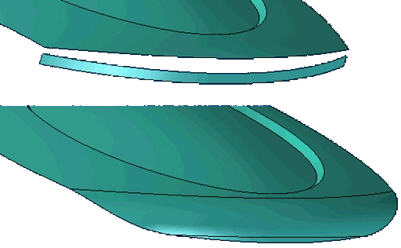
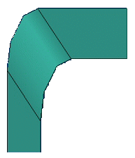
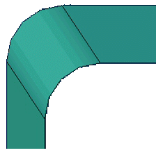
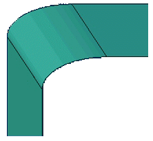

Blend command bar
- Blend Type
-
Variable
Specifies that the rounded edge can have a variable radius value. After you select the edges you want to round, you define the radius values you want in the Select Vertices Step by selecting vertices and keypoints and typing the radius value you want for that location.
BlendSpecies that the round will be a blend between two surfaces you select. If either of the selected surfaces are part of a tangentially connected chain of surfaces, the blend is applied to the chain of surfaces. You can only select faces that are part of a solid body when this option is set.
Surface BlendSpecies that the round feature will be a blend between two surfaces you select. If either of the selected surfaces are part of a tangentially connected chain of surfaces, the blend is applied to the chain of surfaces. When this option is set, you can also specify whether you want to trim the input surfaces or the output surface blend using the Surface Blend Parameters dialog box. You can only select faces that are part of a surface body when this option is set.

- Steps
- Select Step
-
Selects the edges and faces to round or blend.
- Select Vertices
-
For variable radius rounds only, specifies the vertices for rounding.
- Side Step
-
For surface blending only, specifies the side in which you want to apply the blend. You can use the cursor to position the arrow on the side which you want the blend.
- Overflow Step
-
For blending only, specifies options for blend overflow.
- Round Parameters
-
Displays the Round Parameters dialog box.
- Surface Blend Parameters
-
Displays the Surface Blend Parameters dialog box so you can define the trim options you want. This option is available when you set the Surface Blend option on the Round Options dialog box.
- Preview/Finish/Cancel
-
This button changes function as you move through the feature construction process. The Preview button shows what the constructed feature will look like, based on the input provided in the other steps. The Finish button constructs the feature. After previewing or finishing the feature, you can edit it by re-selecting the appropriate step on the command bar. The Cancel button discards all input and exits the command.
- Command Bar Options
- Select Step
-
Select
Sets the edge selection method for constructing a round feature. You can use any combination of selection methods to select a set of edges to round. Hold the Ctrl key to de-select an edge.
For variable rounds:
-
Edge/Corner—Select individual edges, or to select all edges adjacent to a corner by selecting the corner.
-
Chain—Select tangentially continuous chains of edges.
-
Face—Select all the edges of a face by selecting the face.
-
Loop—Select all the edges of individual loops of a face by selecting the face and then choosing a loop.
-
Feature—Select all the edges of a feature by selecting the feature.
-
All Fillets—Select all inward-facing edges of a part by selecting the part.
-
All Rounds—Select all outward-facing edges of a part by selecting the part.
For blends and surface blends:
-
Face—Select all the edges of a face by selecting the face.
ShapeSets the cross sectional shape of the blend. This option is available when you set the Blend option. You can select from the following options:
-
Tangent continuous—Creates a constant radius circular cross section blend. When you set this option, you can use the Radius box to define the radius size you want.
-
Constant Width—Creates a circular cross section blend with a constant chord width between the two selected faces. When you set this option, you can use the Width box to define the chord width you want.
-
Chamfer—Creates a chamfer blend with equal setbacks. When you set this option, you can use the Setback box to define the setback value you want.
-
Bevel—Creates a beveled blend using a value to control the amount of material that is removed from the adjacent faces. When you set this option, the Setback option specifies the size of the blend face, and the Value option determines how much material is removed from the adjacent faces. You can type a value that is greater than zero, but less than or equal to 10.0. A Value entry of 1.0 creates a 45 degree bevel.
-
Conic—Creates a constant elliptical cross section blend. When you set this option, the Radius box defines the width of the cross section and the Value box changes the cross section shape. The value parameter specifies a ratio that offsets the blend radius between the first and second faces selected. For example, a radius of 50 with a value of 10 creates a blend with a radius of 500 at the point of tangency with the first face, ending with a radius of .5 at the point of tangency with the second face. Use a value of 1 to apply a constant radius value across the blend. Use a value greater than 1 to apply a greater radius value to the first face selected, and use a value less than 1 to apply a greater radius to the second face selected.
-
Curvature continuous—Controls the continuity, or softness, of the blend surface. When you set this option, the Radius box defines the radius of the cross section and the Value box is used to control the continuity of the surface between the walls, or the softness of the blend. A Value less than 1.0 creates a flatter, more chamfer-like cross-section. A Value greater than 1.0 appears to extend the selected surfaces and creates a smaller blend radius. Typical values can range from 0.0 to 10.0.
ValueNote:The Bevel, Conic and Curvature Continuous options all utilize the continuity Value.
When the Bevel option is set, you can use the Value to control the amount of material removed from the adjacent faces.
When the Conic option is set, you can use the Value option control the shape of the blend cross section.
When the Curvature Continuous option is set, you can use the Value option to control the shape of the blend cross section.



In the previous images, the continuity values are 0.5, 1.0 and 2.0 respectively.
RadiusSets the radius for blends. You can type a radius value or select a preset value from the list.
WidthSpecifies the width of the chord for the blend. This option is available when you set the Constant Width option for the blend shape.
SetbackSpecifies the setback value for the blend. This option is available when you set the Chamfer option for the blend shape.
LengthSpecifies the linear length value for the blend. This option is available when you set the Bevel option for the blend shape.
Accept (check mark)Accepts the edge selection criteria and selects all edges that meet the criteria.
Deselect (x)Clears any selected edges and the edge selection criteria.
-
- Overflow step
-
Roll Along/Across
For blending only, modifies the blend to maintain selected edges or continuous blend across selected edges.
Tangent Hold LineFor blending only, defines a tangent hold line for the blend. You can define a tangent hold line for each of the input faces or for only one of the input faces.
Default RadiusFor blending only, maintains the default radius for the blend.
Full RadiusFor blending only, varies the radius according to the tangent hold line.
- Name
-
Displays the feature name. Feature names are assigned automatically. You can edit the name by typing a new name in the box on the command bar or by selecting the feature and using the Rename command on the shortcut menu.
How do I
Round part edgesEdit a synchronous round
Control the edit behavior of a synchronous round
Reorder rounded part edges
Blend part faces
Blend surface bodies
Construct a variable radius round
Learn more
Rounding and blendingEditing rounds
Rounding order
Rounding overflow options
How does blending work?
Defining the blend shape
Blends on surface bodies
Tangent hold lines
Variable radius rounds
Look up more details
Round commandRound command bar (ordered)
Round command bar (synchronous)
Round Options dialog box
Round Parameters dialog box
Reorder Round command
Blend command
Surface Blend Parameters dialog box